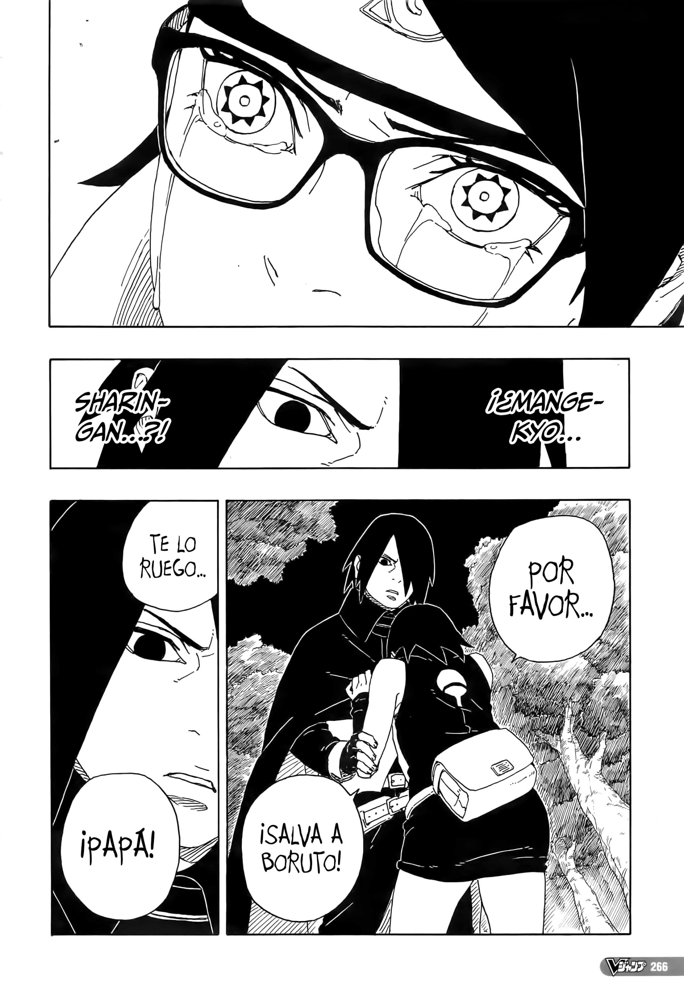
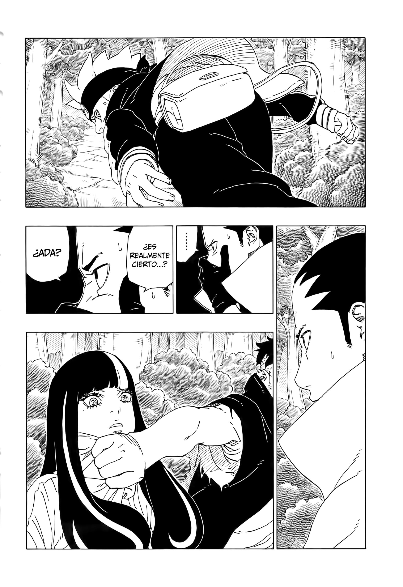
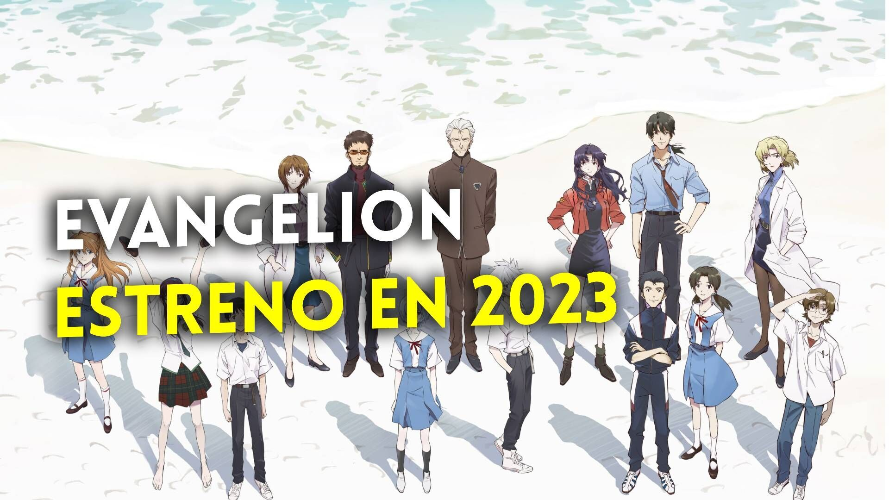

Boruto y evangelion
Manga #80 de boruto
Pequeño vistazo al futuro de la franquicia de boruto que, pese a las críticas y la constante comparación con su predecesora, mantiene a los lectores pendientes del que pasara y como avanzara la historia del hijo mayor del hokage ahora que su vida ha tomado un giro de 180 grados.


lo nuevo de evangelion

